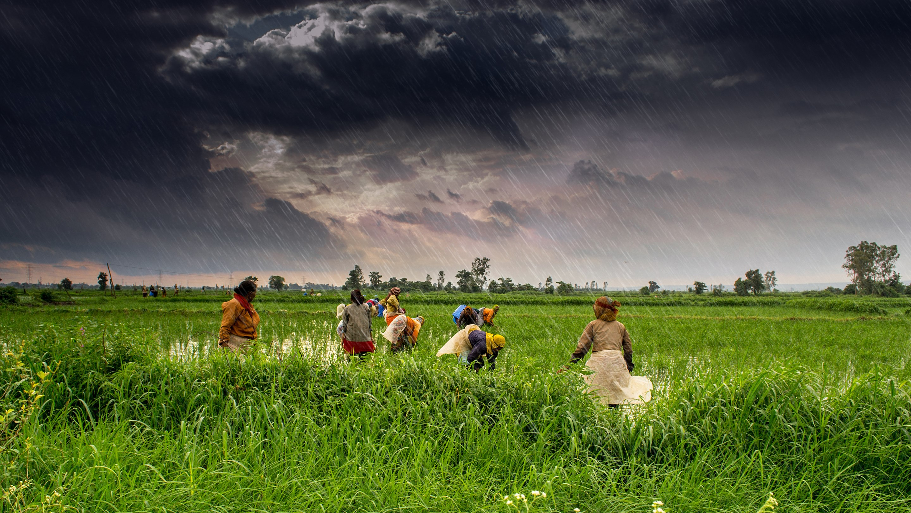

Monsoon
From Wikipedia, the free encyclopedia
A monsoon is traditionally a seasonal reversing wind accompanied by corresponding
changes in precipitation. The term is now used to describe large-scale seasonal changes in
atmospheric circulation and precipitation occurring in certain parts of the world.
Veils of silver mist embrace the emerald hills,
as raindrops whisper secrets to the earth.
The forest, drenched in tender sorrow,
sways gently beneath the weight of clouds.
It is the hour of renewal,
when silence is broken by the hymn of rain,
and every leaf wears a jeweled crown,
glistening in nature’s quiet symphony.
The time of Monsoon—
where the sky weeps,
and the world learns to bloom again.
In whispered arcs the seasons spin,
A circle carved in bark and skin.
One tree, two worlds—both fierce and fair,
Split by light, and crowned by air.
🌅 On one side, autumn softly bleeds,
With copper leaves and sleeping seeds.
The soil sighs beneath bare toes,
Where shadow dreams and stillness grows.
🌱 On the other, spring ignites the green,
A breath of life, serene, unseen.
New grasses rise in vibrant grace,
The sky reborn in nature’s face.
🌗 Ice and fire, dusk and dawn,
In sacred balance, life goes on.
Though branches bend through time and trial,
They meet again in perfect spiral.
So spins the soul, so flows the year,
In silent truth both far and near.
A single tree, a world apart—
Still rooted deep in nature’s heart.

I stood alone where time stood still,
A thousand skies behind one will.
The dawn, the dusk, the silent night,
All spilled their truth in shifting light.
Each panel breathed a fleeting hue—
A storm, a spark, a sky of blue.
Moments danced like whispered grace,
In this sacred, mirrored space.
From fire of eve to starry deep,
Where dreams awaken, others sleep—
I watched the world in fractured frame,
Yet felt the whole call out my name.
For though the skies may change above,
Within me stirs the same old love—
Of time, of place, of all I see…
Each fading hour, still lives in me.
Veils of silver mist embrace the emerald hills,
as raindrops whisper secrets to the earth.
The forest, drenched in tender sorrow,
sways gently beneath the weight of clouds.
It is the hour of renewal,
when silence is broken by the hymn of rain,
and every leaf wears a jeweled crown,
glistening in nature’s quiet symphony.
The time of Monsoon—
where the sky weeps,
and the world learns to bloom again.
Note: This article is about the seasonal winds. For other uses, see Monsoon
(disambiguation).
Etymology
The etymology of the word monsoon is not wholly certain. The English monsoon came
from Portuguese monção ultimately from Arabic mawsim ("season").
History
Strengthening of the Asian monsoon has been linked to the uplift of the Tibetan Plateau after
the collision of the Indian subcontinent and Asia around 50 million years ago.
Asian monsoon
- South Asian monsoon
- Southwest monsoon
- Northeast monsoon
More recently, studies of plant fossils suggest changes in monsoon patterns through
geological time.
Process
Monsoon circulation is driven by differential heating between the land and the ocean, leading
to seasonal reversal of wind direction and precipitation patterns.